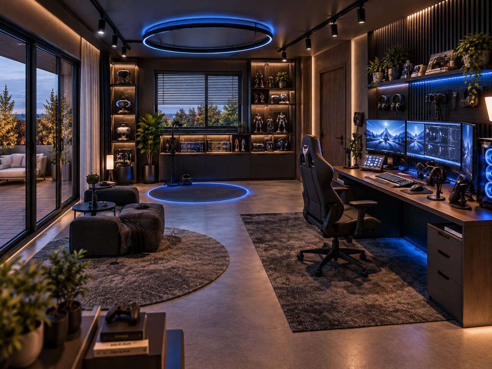
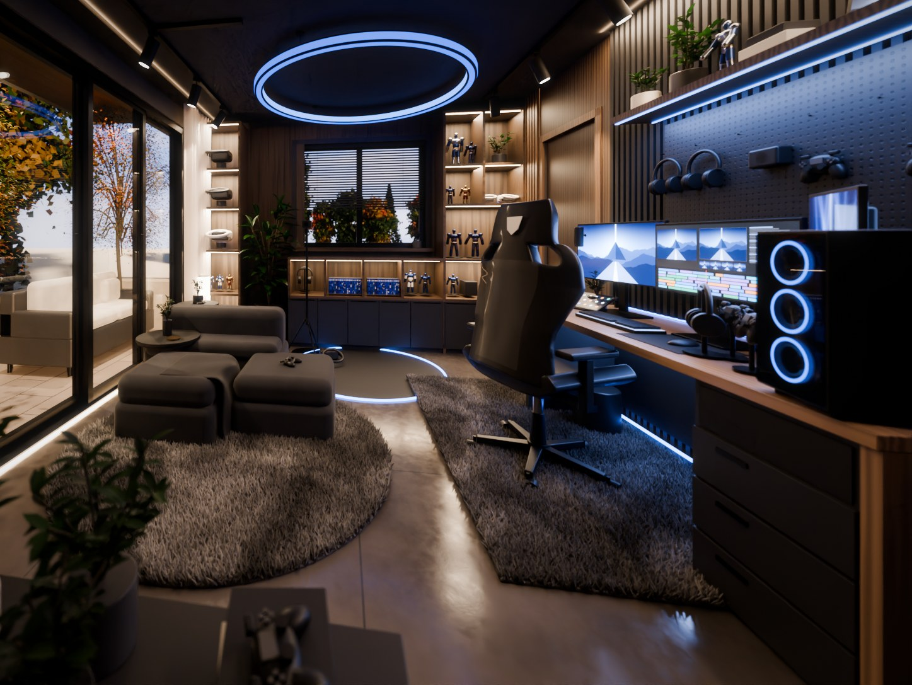

Kat planından ve/veya bir referans iç mekân görselinden (AI render, fotoğraf) odanın Blender modelini tamamen Python ile kurar; kamerayı görsele eşler ve render'ı iterasyonla referansa yaklaştırır. Çıktı: .blend, .glb, final render'lar ve kesit görünüm.


Şu skill'i kur: https://deniz.is-a.dev/oyun-odasi-3d/skill/INSTALL.md Talimatları oku, kurulumu yap ve gereksinimleri (Blender, numpy, scipy, Pillow, pdftoppm) kontrol et.
Claude Code içinde çalışır. Claude talimat dosyasını okuyup skill'i ~/.claude/skills/ altına indirir.
Claude Code:
claude.ai: .skill dosyasını indir, Ayarlar → Capabilities → Skills bölümünden yükle.
PATH üzerindenumpy, scipy, Pillow; PDF planlar için pdftoppmClaude'a planı ve görseli verip "bu görseli 3B modele çevir, plandaki şu oda" demen yeterli. Skill sırasıyla şunları yapar: planın ölçeğini ve odanın ölçülerini çıkarır, görseldeki noktalardan kamerayı en küçük kareler ile çözer, sahneyi kabadan inceye kurar ve her turda referansla yan yana karşılaştırır.
SKILL.md: iş akışı ve karar noktalarıscripts/: geometri, malzeme, bitki, halı tüyü ve ışık modülleri; başlangıç sahnesi; kamera çözücü; karşılaştırma ve GLB araçlarıreferences/pitfalls.md: sık düşülen tuzaklar ve çözümleriexamples/gaming-room/: bitmiş örnek proje (sonuçlar)